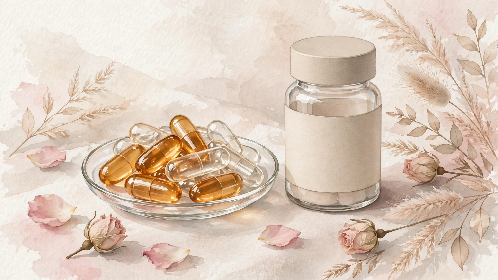

トップ ＞ インナーケア・サプリ ＞ カプセルの種類の表示の見方
カプセルの種類の表示の見方

サプリメントの形状の中でも、カプセルタイプは「ハード」と「ソフト」の2種類があり、表示のされ方も少しずつ違います。粒の大きさや飲み心地にも関わる部分なので、選ぶときは種類の表示まで読んでおくと失敗が減ります。この記事では、カプセルの種類の表示の見方を整理します。
種類は、形状の表記で見分ける
ハードカプセルは、粉末などを固い殻に詰めた形で、キャップと本体がはめ合わさった構造です。ソフトカプセルは、やわらかい膜で油状の内容物などを包んだ形で、丸や楕円のものが多く見られます。商品の説明や形状の欄に「ソフトカプセル」「ハードカプセル」と書かれているので、まずこの表記を確認します。
内容物が油状なのか粉末状なのかも、説明文に書かれていることがあります。形状と内容物の組み合わせで、その商品の性格が見えてきます。錠剤タイプと比べる場合も、この形状の情報が比較の材料になります。
カプセルの素材も、原材料名に書かれている
見落とされがちですが、カプセルの殻の素材も原材料名の一部として表示されています。ゼラチンなどの素材名が、原材料名の欄に並んでいるはずです。避けたい素材がある方は、内容物の成分だけでなく、カプセルの素材まで目を通してください。
大きさについては、表示だけでは感覚がつかみにくい部分です。少量サイズやトライアルが用意されている商品なら、実際に飲む感覚を確かめてから通常サイズに進む順番が無難です。粒の大きさの感じ方には個人差があるため、人の感想は参考程度に留めます。
飲み方と保管の案内も読む
飲み方の案内としては、「噛まずに水などと一緒に」といった文言が一般的です。カプセルは殻ごと飲む設計なので、案内と違う使い方はしません。また、保管については、高温の場所では変形したり、粒同士が付きやすくなったりする場合があるため、保管条件の表示を確認し、高温多湿を避ける置き場所を選んでください。
ピルケースに移し替える場合も、元の容器より密閉性が下がることがあるため、詰める量は数日分までが目安です。カプセルタイプは、「種類・素材・飲み方・保管」の4点を表示で押さえると、選ぶときも使うときも迷いが少なくなります。
見た目の変化は、開封時の確認で気づく
カプセルタイプは、開封したときに容器の中の様子を確認する習慣も大切です。ソフトカプセルが容器の底でくっついていないか、ハードカプセルから粉が漏れて容器の底にたまっていないか。そうした変化に気づいたら、保管の条件を振り返り、気になる場合は販売者の窓口に相談してください。
シート状の包装（PTPシート）に入ったカプセルもあります。この形は1回分ずつ取り出せる反面、シートから出した後の保管には向きません。飲む直前に取り出すのが基本です。形状ごとの扱いは、表示の案内とあわせて確認してください。カプセルは殻も含めてひとつの設計です。殻の種類と素材、内容物、保管の3点で読む習慣をつけましょう。
粒の数え方についても一言。カプセルは表面が滑らかで、手のひらから転がりやすい形です。数えるときは容器の蓋や小さな皿に出すと、落としたり数え間違えたりしにくくなります。落とした粒は、衛生面からも元の容器に戻さないのが基本です。
カプセルの色や透明度は、商品の見分けの手がかりにもなります。複数の商品を併用している場合は、色や形の違いをメモしておくと、ケースへの移し替えや数え間違いの防止に役立ちます。ただし、見た目が似たカプセルも多いため、最終的な確認は表示で行ってください。
初めてのカプセル商品では、少量サイズで大きさの感覚を確かめる順番が基本です。飲む感覚は個人差が大きい部分なので、人の評価より自分の確認を優先してください。
セラフィナ「カプセルにも種類があるんだね。素材の表示まで読むと選び方が変わるよ」

セラフィナ｜美容の道具箱の案内役
「量と表示が分かれば、美容は失敗しない。」——セラフィナと白猫のモコが、買う前のチェックポイントを案内します。綺麗になりたい気持ちに正直に、でも表示は冷静に読むのが、このサイトの約束です。